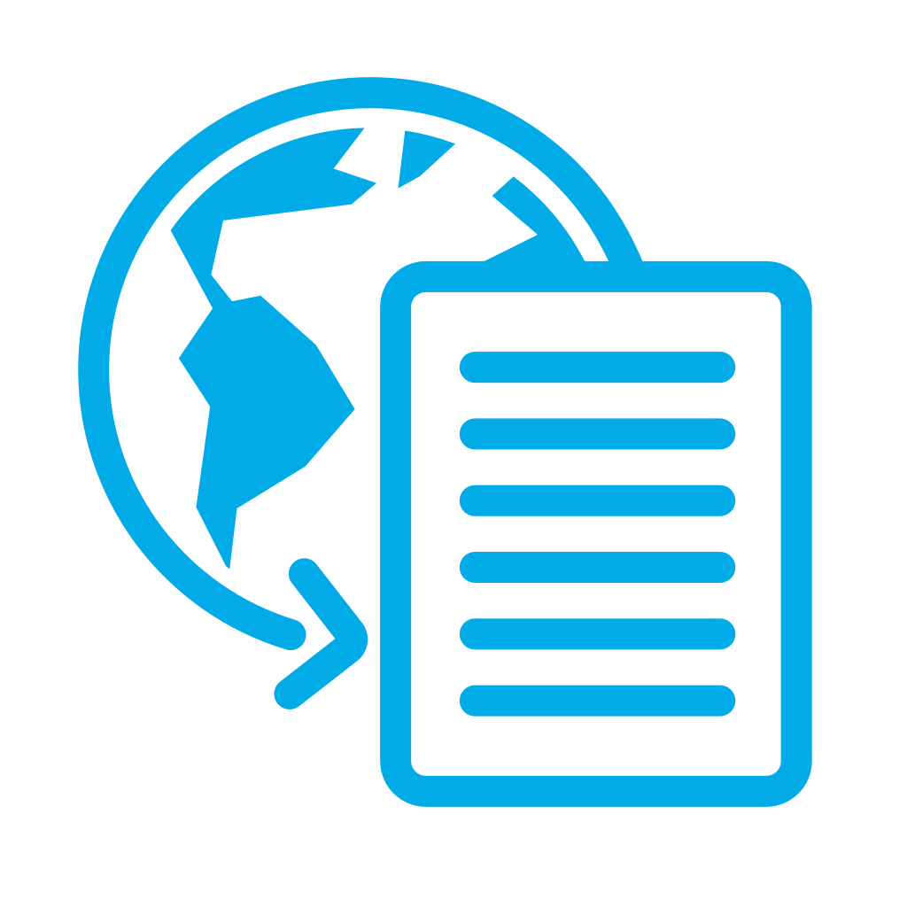
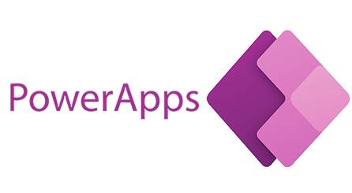

Phone number:
Phone number:  Email:
Email:  Date of birth: 03-02-1988
Date of birth: 03-02-1988 Place of birth: Pszczyna/Poland
Place of birth: Pszczyna/PolandABOUT ME
My name is Grzegorz. I have been working as a Power Platform Developer for several years. So far, I have been responsible for creating solutions based on Microsoft Power Platform tools. I am looking for development opportunities, and I would like to use my extensive experience for further development. I enjoy working in a team and have never had problems with effective communication with colleagues..
Experience
- 2019 - now: ZF SSP Bielsko- Biała - Power Platform Developer
- 2018-2019: ZF SSP Bielsko- Biała - Process Data Analyst
Creating Power BI raptors based on multiple data sources such as Share Point list,Database SQL, Oracle, DataVerse. Reports created for all departments in ZFSSP Bielsko-Biała (Logistics, Technical Department, Production, HR). Another tool used is Power Apps,applications also created for all departments. Applications based on SharePoint List andDataverse. To a lesser extent, work on Power Automate - creating bots and automatic flows.
Analyzing and presenting production data to increase OEE in the plant and reducescrapping
Języki
- Angielski - B1
- Polski - national
Education
- 2019-2021: Akadaemia Techniczno Humanistyczna: Master in Management - Zarzadzanie, specjalizacja zarzadzanie firmą
- 2008-2012: Akadaemia Techniczno Humanistyczna: Degree in Management - Zarzadzanie, Specjalizacja Logistyka jakość
- 2004-2008: ZSEEiM Bielsko-Biała: Equivalent to A-levels
Skills
Hight
- Power BI Developer- (DAX, Power Query, Data modeling, Visualizations).
- Power Apps Developer - (Low - Code, Data modeling, Visualizations, Dataverse).
- Share Point - (List, Site).
- MS Forms.
Medium
- SQL, Oracle.
- Datavers - Management.
Low / during studying
- Pyton
- Html
- Java Scrip
- Api/Azure
Certificates and diplomas
- Microsoft Power BI - Zaawansowane rozwiązania z wykorzystaniem języka DAX | 03/12/2020 
- Podstawy programowania w języku Python- szkolenie dla nieprogramistów” | 07/11/2023
- Podstawowe szkolenie w zakresie HTML | 03/01/2024
Participation in projects
-

Line Monitor
Power bi report presenting and monitoring the current situation on production lines Excellence Award 2021.
-

dSFM lev1
An application designed to manage dsfm meetings during covid, used throughout division A.
-
SHOPFLOOR DASHBOARD
A Power BI report that shows the situation across the entire production floor with key information.
-
ZFSSP eLine Monitor v1_5
Power apps application used for production monitoring and entering manual results by production leaders - widespread in division A
-
NEW_SCRAP
Power bi report analyzing scrap in the plant with long term analysis
Interests
-
Piłka Nożna
I am a football fan and I support the Juventus Turin team. He practices his passion in his free time.
-
Programing
In my free time I learn programming in Python, Java Script and HTML
-
Film
Favorite film topics are historical based on facts, documentaries, horror, adventure films.
-
History
I am interested in the subject of historical wars and battles over the centuries
-
Cars
I like car racing and rallies and driving at sports car shows